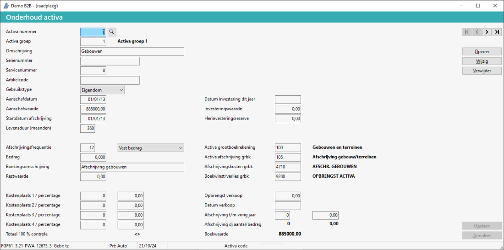

Ga naar Onderhoud activa (GVO).
-
In Menu 3.0 onder
 Financieel > Overige > Configuratie.
Financieel > Overige > Configuratie.
Geef het activa nummer in.
Kies voor de knop Wijzigen. of Kies voor de knop Opvoer.

Wijzig de gegevens of geef deze in.
-
Bij Afschrijvingsfrequentie kan er gekozen worden tussen de opties Vast bedrag en afschrijvingspercentage.
Kies voor de knop Opslaan.
 (
(